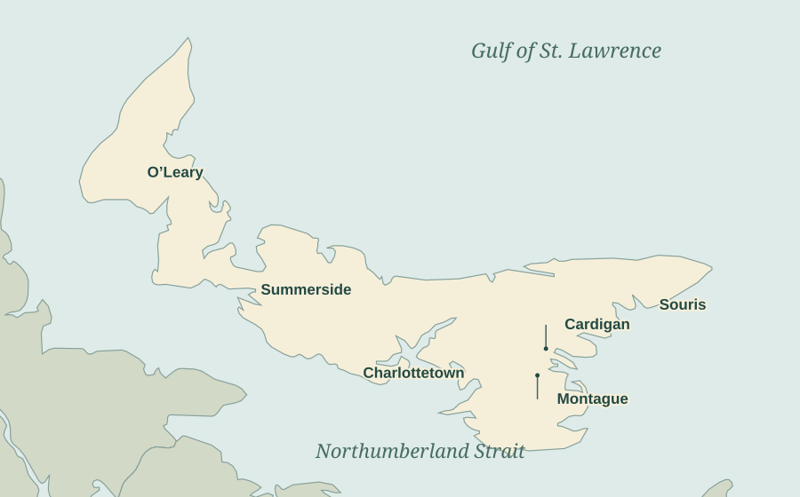

The People Behind the Postcards: A Directory of P.E.I. Photographers
Someone stood behind every camera. A few names are familiar—Bayer and Louson above all—but look through the collection and a much larger company begins to emerge: a minister looking out over Cardigan, a Souris shopkeeper, photographers beside fox pens, studio portraitists, and visitors whose Island pictures travelled through national publishers.
This is a first directory of those people and photographic businesses, arranged alphabetically by surname or studio name. Each short profile is a doorway into a body of work. Where an existing story goes further, there is a link to follow.
Reading the numbers: “catalogued cards” counts individual cards in the current collection, including duplicate views and recorded attributions. Distinct-view counts are given where the images have been checked together. Examples found through Harry Holman’s research are labelled separately. These are starting counts for a growing directory.
Where the Island cameras were based
Choose a numbered town to find its photographers, then follow a name to the profile. The dots mark approximate town centres. They bring together working connections from different years: Swan’s early employment in Charlottetown, for example, precedes his later railway commission.

1Cardigan2Charlottetown3Montague4O’Leary5Souris6Summerside1 · Cardigan
2 · Charlottetown
James Alexander Shaw Bayer · Cook Studio · Oliver Cleveland Craswell / Craswell Studio · A. Garnhum / Garnhum Photo Studio · Walter Erdley Hyndman · William Steele Louson · A. E. Lyon · Walter G. Stiff / Stiff Photo · John Wesley Swan
3 · Montague
4 · O’Leary
5 · Souris
6 · Summerside
Photographers whose working bases remain uncertain appear in the directory with their known subjects. Springfield’s Colclough family connection and the Summerside copyright notices are described in their entries. The map can grow as working addresses and local histories are established.
The directory · 35 profiles
Morley S. Acorn
10 catalogued cards
Souris

A boat making Souris harbour, a lighthouse at night, the long breakwater, a hotel and the town’s stone church: Acorn’s pictures keep returning to the everyday geography of Souris. The collection also gives him a wider stage, with the artillery’s Coronation Day salute and the lumbering scene. His name ties these varied subjects together into a small portrait of a town looking both inland and out to sea.
D. W. Allen
5 catalogued cards
Cape Tormentine and the Strait; home base unconfirmed

Allen’s five cards follow the ferry connection from the New Brunswick shore. The S.S. Charlottetown appears alongside a Cape Tormentine street scene, and the Abegweit arrives at the dock in a photograph dated 8 August 1947. They are useful companions to the Island views: the same crossing, seen from its other end, with a photographer’s credit that deserves to be kept in sight.
James Alexander Shaw Bayer
77 cards catalogued to Bayer
Charlottetown

Bayer photographed an Island at work and at play: city streets, churches, golf and tennis, fox farms, railway activity and public gatherings. He managed the Charlottetown branch of Gauvin & Gentzel before advertising under his own name in 1907. His pictures travelled as real-photo postcards, printed view cards and illustrations in books. The white-margin series and the Odd Fellows procession show how much remains to be gathered beneath that familiar “Photo Bayer” credit.
Bayer’s life and work · The white-margin cards
Cards behind this entry · 77
0110 · 0111 · 0112 · 0113 · 0114 · 0115 · 0116 · 0117 · 0118 · 0119 · 0120 · 0121 · 0122 · 0123 · 0124 · 0125 · 0126 · 0134 · 0182 · 0214 · 0477 · 1118 · 1789 · 1865 · 1870 · 2157 · 2185 · 2532 · 2925 · 2929 · 2939 · 2940 · 2941 · 2942 · 2943 · 2944 · 2945 · 2946 · 2947 · 2948 · 2949 · 2959 · 2964 · 2965 · 2966 · 2967 · 2970 · 2972 · 2973 · 3086 · 3087 · 3088 · 3625 · 3715 · 3716 · 3793 · 3794 · 3795 · 3796 · 3875 · 3898 · 3906 · 3908 · 3945 · 3951 · 4039 · 4069 · 4126 · 4141 · 4169 · 4526 · 4666 · 4667 · 4669 · 4670 · 4677 · 4687
B. P. Colclough
34 catalogue attributions; 20 filed to Island places
Springfield family connections; Ontario and Nova Scotia also represented

The Haslam–Colclough group brings the camera close to home: Stone Cottage, its grounds and animals, roads around Springfield and Breadalbane, and the Dunk River. Correspondence names the Reverend Basil Colclough. This is a family-associated group, with several photographic attributions and locations still recorded as probable. Its 34 cards also include Ontario and Nova Scotia subjects, so the Island portion is smaller. The pleasure lies in the ordinary surroundings that a commercial souvenir series might pass over.
Cook Studio
6 catalogued cards
Charlottetown

Cook’s studio is represented by people: soldiers, pairs of sitters and the graduating class of Saint Dunstan’s University in 1932. The class card assembles individual portraits into a keepsake for an entire year. These small photographs remind us how naturally postcard stock served family and personal uses alongside the familiar town views. George H. Cook’s earlier Charlottetown studio also belongs in Swan’s story; the later studio credit is retained here as it appears in the catalogue.
J. M. Cossette
2 catalogued cards
Repentigny, Quebec; Island resort subjects

Cossette’s two views take us to Shaw’s Hotel at Brackley Beach and the Pines Motel at Rusticoville. From their elevated viewpoints, accommodation, lawns, water and surrounding land become one holiday prospect. This is the Island seen for the traveller choosing a place to stay. The credit supplies Repentigny, Quebec, as Cossette’s base, adding another reminder of how Island postcard pictures reached us through photographers from farther away.
Oliver Cleveland Craswell / Craswell Studio
6 catalogued cards
Charlottetown

Craswell learned the trade in Bayer’s studio and later worked under his own name in Charlottetown. The collection ranges from foxes to the Confederation Building and Seaside Inn at Stanhope. Two fox cards show the same photograph with a Craswell credit and a separate Dinnis copyright notice—a useful example of the different names that can share a postcard. The provincial archives preserves a joint Bayer–Craswell collection of glass negatives, extending the story into schools, civic life and sport.
William A. Cumming
62 catalogue attributions; a further RPPC group under study
Montague

Cumming’s signed images carry Montague’s name well beyond its river: fox ranches, bridges, mills and Island landscapes appear among cards issued by several publishers. Harry Holman traced William and his brother John through the Canadian Gem Photo Company and the Montague studio. A faint mark on a bridge card and a fox photograph shared with a credited Maddigan edition anchor our recent handwriting study. Thirteen Cumming-associated candidates are shown there, with the stronger connections and the working theory identified separately.
Harry Holman on Cumming · The Montague handwriting families
Cards behind this entry · 62
0307 · 0327 · 0332 · 0858 · 0919 · 0923 · 0951 · 0953 · 0957 · 0981 · 0991 · 0992 · 0995 · 1055 · 1057 · 1062 · 1067 · 1071 · 1078 · 1083 · 1087 · 1121 · 1149 · 1159 · 1160 · 1208 · 1217 · 1223 · 1224 · 1225 · 1226 · 1231 · 1257 · 1312 · 1331 · 1448 · 1697 · 1698 · 1857 · 1862 · 1929 · 2049 · 2056 · 2133 · 2410 · 2440 · 2564 · 2568 · 2572 · 2588 · 2595 · 2597 · 2693 · 2851 · 3384 · 3385 · 3387 · 3388 · 3394 · 3459 · 3622 · 4204
Ron Garnett
3 credited postcard examples located
Charlottetown aerial subjects; studio base unverified here
Garnett brings the directory into the colour-postcard years. Holman illustrates two credited aerial views, Allied Sales PEI21H and PEI34H, showing Charlottetown and Peake’s Wharf. Streets, roofs, wharves and pleasure craft become parts of one landscape. An Island Archives postcard adds an aerial view of Freeland Village. These three examples begin a later survey of the chromes.
See Garnett’s two cards in Harry Holman’s aerial survey · The Freeland Village postcard
A. Garnhum / Garnhum Photo Studio
10 catalogued cards
Charlottetown

Garnhum’s Island includes Province House and Government House, the golf club, Brighton Shore, Keppoch Beach, the Exhibition and the Driving Park. Several mailed examples belong to the late 1940s and early 1950s. Together they offer a later city-and-holiday counterpart to the Edwardian postcard makers. A stamped house photograph adds a quieter commission to the public views. The studio’s full biographical story remains to be assembled; the initials here follow the cards and catalogue.
M. Griffin
6 copies representing 3 views
O’Leary

Griffin’s small group reaches across western Prince Edward Island: Senator Yeo’s residence at Port Hill, the ruined steam mill at Tyne Valley, and the Roman Catholic church and parochial house at Grand River. Three copies preserve the Yeo view and two the mill ruins. With duplicates brought together, six cards resolve into three photographs—houses, industry and a parish landscape, all carrying an O’Leary photographer’s name.
S. J. Hayward
30 catalogued cards
Montreal; photographs across Prince Edward Island

Hayward’s name accompanies a broad travel album: Charlottetown’s public buildings and hotel, Fort Edward, Summerside scenes and the ferries. The Montreal studio is independently documented in architectural photograph collections. On the Island cards, buildings, gardens and transport share the frame with the places visitors would encounter. His thirty catalogue entries make him one of the more substantial named contributors here, even though he is much less familiar in Island postcard conversations than Bayer or Louson.
G. G. Hughes
1 explicitly credited view
West River subject; photographer’s base unconfirmed

The little label “Photo G. G. Hughes” survives clearly on a broad view of the West River near Charlottetown. A figure crosses the foreground above the water, giving the landscape a human scale. For the moment this single card is Hughes’s foothold in the collection. The printed credit gives us a name worth searching; the caption gives us the photographed place. A fuller biography and working address are still to come.
Cards behind this entry · 1
George Hunter
2 credited postcard examples illustrated by Harry Holman
Charlottetown aerial subjects; visiting Canadian photographer
Hunter’s aerial photographs look across Charlottetown from the west, gathering the hospital, waterfront and city blocks into wide views. Holman identifies two cards from the same flight, issued through different postcard lines. Their reuse is revealing: a later card could carry a cityscape photographed years earlier. Hunter belongs to the continuing story of images finding new lives in new editions.
Walter Erdley Hyndman
2 postcard views identified through a contemporary magazine
Charlottetown; iceboat photographs at the Capes

Hyndman gives a name to two of the Island’s most memorable winter photographs: “A Hard Pull” and “Rough Road to Travel.” Harry Holman found the credits in the April 1903 Prince Edward Island Magazine, where a third iceboat photograph also appeared. Hyndman was a provincial Public Works engineer. His pictures follow people wrestling boats across difficult ice, and their later postcard lives carried that experience to readers far from the Strait.
J. G. Jardine
2 cards with Jardine copyright credits
Summerside, as given in the copyright credit

One card presents a silver-black fox with a $10,000 valuation; the other presents a fox pup as Island stock. Both carry Jardine’s name, Summerside and a 1913 copyright date. These are small advertisements for an extraordinary business, where a single animal could be presented like a prize asset. Jardine’s precise role in making the photographs is still open, so this entry preserves the copyright connection supplied by the cards.
A. S. Johnson
1 catalogued card
Location of the original scene unestablished; novelty card labelled Charlottetown

“Quick Returns” supplies the joke: enormous fish seem ready to leap into a delighted fisherman’s hands. The Charlottetown wording sits over a deliberately exaggerated scene. Johnson’s contribution belongs to the playful, manufactured side of the postcard trade, where a place-name could help sell a comic picture. The catalogue attributes this 1913 card to A. S. Johnson; it provides no secure view of an Island fishing spot.
Cards behind this entry · 1
R. M. Johnson
2 copies of 1 copyright-credited view
Spring Park fox-farm subject, Charlottetown

Two cards show a man crouched beside foxes at the Spring Park Black Fox Company’s ranch. Both preserve a Canadian copyright notice naming R. M. Johnson and dating the image to 1912. Bringing the copies together adds another named participant to the fox industry’s visual record. As with Jardine, the surviving notice establishes the rights credit; Johnson’s exact part in the photographic work needs a fuller record.
William Steele Louson
253 named catalogue records, including 1 found in the title field
Charlottetown; work across the Island

Louson made a wonderfully varied Island: lanes and streams, harvesting, boats, gardens, buildings and people going about their day. A wholesale sales agent based in Charlottetown from 1900, he supplied photographs to illustrated publications as well as postcard publishers. Warwick & Rutter made especially extensive use of his work. The scarcer “Photo by Louson” and numbered “Louson Photo” real-photo cards let us approach the images through his own surviving credits, while reused views continue to enlarge the picture.
The two signed real-photo groups · Harry Holman on the Warwick & Rutter sepias
Cards behind this entry · 253
0016 · 0030 · 0031 · 0033 · 0136 · 0147 · 0158 · 0376 · 0412 · 0422 · 0424 · 0456 · 0467 · 0474 · 0517 · 0536 · 0550 · 0551 · 0564 · 0565 · 0617 · 0668 · 0669 · 0688 · 0695 · 0697 · 0751 · 0792 · 0805 · 0806 · 0849 · 0874 · 0875 · 0877 · 0975 · 0978 · 1004 · 1049 · 1052 · 1056 · 1060 · 1061 · 1064 · 1066 · 1069 · 1070 · 1072 · 1073 · 1074 · 1075 · 1076 · 1079 · 1081 · 1082 · 1085 · 1086 · 1110 · 1158 · 1161 · 1162 · 1202 · 1203 · 1204 · 1205 · 1206 · 1207 · 1209 · 1210 · 1211 · 1213 · 1214 · 1215 · 1221 · 1227 · 1228 · 1232 · 1233 · 1234 · 1235 · 1239 · 1241 · 1242 · 1244 · 1245 · 1246 · 1247 · 1248 · 1249 · 1250 · 1251 · 1254 · 1255 · 1256 · 1259 · 1261 · 1270 · 1272 · 1273 · 1316 · 1372 · 1428 · 1435 · 1438 · 1440 · 1442 · 1446 · 1447 · 1449 · 1450 · 1451 · 1453 · 1458 · 1584 · 1594 · 1677 · 1679 · 1692 · 1693 · 1695 · 1700 · 1748 · 1757 · 1797 · 1802 · 1890 · 1909 · 1912 · 1913 · 1918 · 1921 · 1922 · 1924 · 1928 · 2020 · 2023 · 2042 · 2043 · 2046 · 2047 · 2048 · 2053 · 2054 · 2134 · 2139 · 2177 · 2191 · 2197 · 2240 · 2241 · 2275 · 2287 · 2345 · 2364 · 2377 · 2391 · 2415 · 2441 · 2489 · 2558 · 2559 · 2560 · 2563 · 2567 · 2569 · 2574 · 2581 · 2593 · 2594 · 2600 · 2608 · 2647 · 2692 · 2853 · 2926 · 2974 · 2975 · 2976 · 2979 · 2980 · 2989 · 3025 · 3049 · 3077 · 3085 · 3108 · 3114 · 3164 · 3199 · 3205 · 3280 · 3364 · 3365 · 3366 · 3368 · 3374 · 3376 · 3377 · 3378 · 3389 · 3393 · 3398 · 3399 · 3400 · 3402 · 3403 · 3404 · 3405 · 3406 · 3407 · 3408 · 3410 · 3415 · 3416 · 3419 · 3428 · 3430 · 3435 · 3453 · 3465 · 3491 · 3516 · 3526 · 3596 · 3617 · 3634 · 3637 · 3639 · 3641 · 3644 · 3650 · 3652 · 3656 · 3725 · 3727 · 3728 · 3731 · 3770 · 3872 · 3874 · 3892 · 3958 · 4014 · 4016 · 4044 · 4065 · 4161 · 4336 · 4481 · 4610 · 4624 · 4626 · 4664 · 4694
A. E. Lyon
6 portrait cards identified in the catalogue
Charlottetown

Lyon’s surviving group is a roomful of people: women seated or standing for portraits, a soldier, a man in a suit and a young man in sporting dress. The impressed studio name can be easy to overlook beneath a photograph. One such portrait, 0871, was found through its description rather than its photographer field. A 1922 telephone directory places A. E. Lyon, photographer, at 107 Queen Street, giving these personal keepsakes a working address in the city.
Maritime Skyways Ltd.
1 credited example in Harry Holman’s survey
Charlottetown aerial subject; company base unverified here
A harbour view taken from the south and published by the Book Room, Halifax, as BR-652 credits Maritime Skyways. It gathers the working waterfront into one broad panorama, from wharves and warehouses to the railway approaches. The aerial-service credit belongs alongside the individual photographers because it tells us how the picture was supplied, while leaving the camera operator unnamed.
John Muir
1 securely identified postcard photograph here
Pictou, Nova Scotia; working for W. H. Munro Studios

Muir photographed the 1923 Pictou gathering that includes PEI’s Chief John Sark and Chief Matthew Francis. The Nova Scotia Museum supplies the photographer’s name and his connection with W. H. Munro Studios. On the copy here, Francis later used the portrait to send a Christmas greeting. It is a striking meeting of public occasion and personal correspondence, and a reminder that portraits of Islanders were also made while they were visiting their neighbours.
Nova Scotia Museum identification · The postcard’s personal journey
Cards behind this entry · 1
W. M. Munro
4 catalogued Earl Grey cards
Pictou, Nova Scotia

Munro’s name appears on views of the Earl Grey, an icebreaker closely bound to the Island’s winter communications. The bow-on portrait amongst broken ice is particularly forceful: the ship seems to occupy almost the entire narrow card. The printed credit on 3054 reads “W. M. Munro.” Those initials are preserved here; the W. H. Munro studio named in the museum’s John Muir record is a separate identification requiring further biographical work.
National Film Board photographic credit
16 explicitly credited catalogue records
Island subjects; a national photographic service

These cards range from Charlottetown’s streets and Exhibition Grounds to New Glasgow, Green Gables, Shaw’s Hotel and an aerial view of the capital. Their shared N.F.B. credit identifies the supplying institution, with individual photographers still to be traced. Together they extend the directory beyond the local studio into the public photographic collections from which postcard publishers obtained Island views.
E. Otto
1 credited card
Dalvay subject; photographer’s base unconfirmed

Otto’s Dalvay view rises above the hotel and lake to take in the long beach, dunes and sea. It belongs to the colour era and offers a quite different experience from the early postcard’s close view of the building across the water. The collection currently gives Otto one named image, enough to retain the credit and a place in this directory while a fuller account of the photographer is sought.
Cards behind this entry · 1
Paul’s Flying Service
2 copies of 1 aerial ferry view
Northumberland Strait subject; operating base unconfirmed

The Charles A. Dunning is caught under way, its wake spreading behind it and its deck visible from above. Two cards reproduce the same aerial photograph and both carry the Flying Service credit. The view belongs to a changing postcard world in which ships and shorelines could be photographed from the air. The service’s name survives; the individual who held the camera is still unidentified.
Lorne H. Read / Read Photo
35 catalogued cards
Summerside; north-shore subjects also represented

Read’s cards take us through Summerside streets, into the fox industry and out to Cavendish’s shore and familiar literary landscape. His name also appears on the ceremonial parade card 0902. Lorne Read’s larger photographic legacy is preserved in Summerside archival collections, where it helps document the town across many years. The postcard selection is one accessible doorway into that work: a changing town, its businesses and occasions, and the countryside people visited beyond it.
Summerside’s archival photograph collection · Lorne H. Read’s identification
W. Rogers — an attribution to revisit
1 card catalogued under this name
Bonshaw subject; personal identity and base unconfirmed

A little coloured river view near Bonshaw sits inside a broad decorative border, with “W. Rogers” written below it. The catalogue places Rogers in the photographer field, but the visible signature alone leaves its role open: it could belong to the maker or to someone using the card. This is kept as a research lead. The river scene deserves a place in the album; its photographer’s identity will benefit from another signed example or a contemporary record.
Cards behind this entry · 1
Royal Canadian Air Force photographic credit
4 copies representing 2 credited views
Summerside aerial subjects

The R.C.A.F. credit appears on aerial views of Summerside and the Dominion Experimental Fox Farm, with two copies of each in the collection. Streets, fields and buildings become legible together from the air. These postcards preserve institutional photography in a form that anyone could buy and send, while the names of the individual aircrew photographers remain to be recovered.
Sankey Photo Press
1 identified card in this collection
Barrow-in-Furness, England

The Earl Grey brings an English photographic business into an Island album. The card names Sankey Photo Press, Barrow, and presents the icebreaker in a broad ship portrait. Edward and Raymond Sankey’s much larger surviving archive records their home region, its people, transport and industry. This single maritime card connects that body of work with the vessel that later became so familiar on the Strait.
Cards behind this entry · 1
The Reverend Edwin Smith
3 views across 5 cards
Cardigan

Smith’s handwritten “View from Study window” brings Cardigan’s river almost into the room. His other photographic card watches the schooners during shipping season. Both images reappear in printed editions issued by P. D. Ayer, and the church view carries the explicit credit “Photo by Rev. E. Smith.” These five cards form a particularly satisfying little group: a minister’s outlook, the village’s busy waterfront, and a clear path from personal photographs to commercial postcards.
Walter G. Stiff / Stiff Photo
5 cathedral-fire views across 7 cards
Charlottetown in 1913

Stiff’s postcards follow the destruction of St. Dunstan’s Cathedral and its aftermath, preserving times as well as views. Copyright deposits held by the British Library identify Walter G. Stiff behind the credit. The sequence moves from the fire on 8 March 1913 to the remaining steeple later that month. It is a compact and powerful body of work: one city disaster, recorded closely enough that the photographs can be read together as events unfolding.
John Wesley Swan
6 album-to-postcard views traced here; 48 Island photographs reported in 1902
Montreal; earlier work in Cook’s Charlottetown studio

Swan returned to the Island in 1902 on a Canadian Government Railways photographic commission. His album Through the Maritime Provinces preserves eight Island photographs; six familiar postcard views can be followed into Valentine’s editions: trout fishing, Rustico Beach, Pownal Bay, a pastoral scene, the country drive and Morell. Harry Holman brought together this connection with Roger Miller’s research. Swan’s pictures helped travellers imagine the Island before arriving, and several became enduring postcard favourites.
Harry Holman on Swan, drawing on Roger Miller · The wider ten-view Valentine railway series
B. H. Turner
9 catalogued cards
O’Leary

Turner’s O’Leary train-wreck photographs preserve the derailment of 26 February 1914 from several positions. Around them sit church and fox-ranch cards, including St. Anthony’s and the Proina ranch. They give western Prince Edward Island another local camera, attentive to both an exceptional event and the community’s buildings and businesses. The surviving initials and O’Leary credit provide a firm starting point for gathering a fuller series.
Wallace Photo
1 named view identified here
Victoria Park, Charlottetown subject; working base unconfirmed

The decorated pavilion in Victoria Park carries a small “Wallace Photo” credit, easily lost beneath the larger subject. It adds another name to Charlottetown’s postcard story, even though a first name and studio address have yet to emerge from this search. This card is a useful place to begin: the same distinctive pavilion can be compared across other views as more examples of Wallace’s work come to light.
Cards behind this entry · 1
An album still gathering its makers
Harry Holman’s STRAITPOST has been particularly valuable in restoring photographers’ names to familiar pictures. His Swan article draws on Roger Miller’s research; his Hyndman discovery joins magazine illustrations to surviving postcards. The entries above also draw on the collection’s scans and catalogue, the existing research stories, archival descriptions and contemporary directory evidence. Credits to a photographer, a studio, a supplying agency and a copyright holder are described according to the evidence each card preserves.
The catalogue also holds a few photographs of places beyond the Island: an Annabelle Studio view of Wayside Cabins at Huntsville, Ontario, and two Montreal aviation cards credited to L. Charpentier (the companion view). They remain useful named records, ready for a wider directory when those parts of the collection are explored.
Publishers such as Carter, Haszard, Maddigan, Taylor, Pugh and Warwick & Rutter provide another route through the pictures. Their imprints help trace how an image circulated. The Postcard DNA stories follow those journeys and the emerging connections between printed cards and real-photo originals.
Counting and mapping notes
The counts were checked against the current 4,694-card export. The title-field search adds Lyon 0871, Louson 2975, Johnson 3949, Wallace 3697 and Sankey 3518 to the relevant entries. Swan’s six linked cards are examples of six album matches; the associated Valentine railway series has ten numbered views. His reported 48 photographs describe the 1902 commission. The map uses town-level positions and the same Natural Earth coastline as the site’s other Island maps. Full biographies, total historical outputs and several first names remain future research.